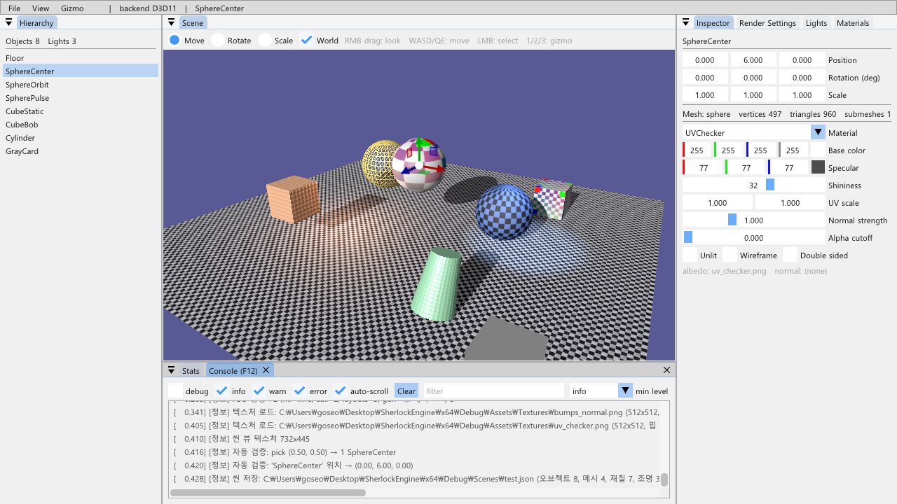
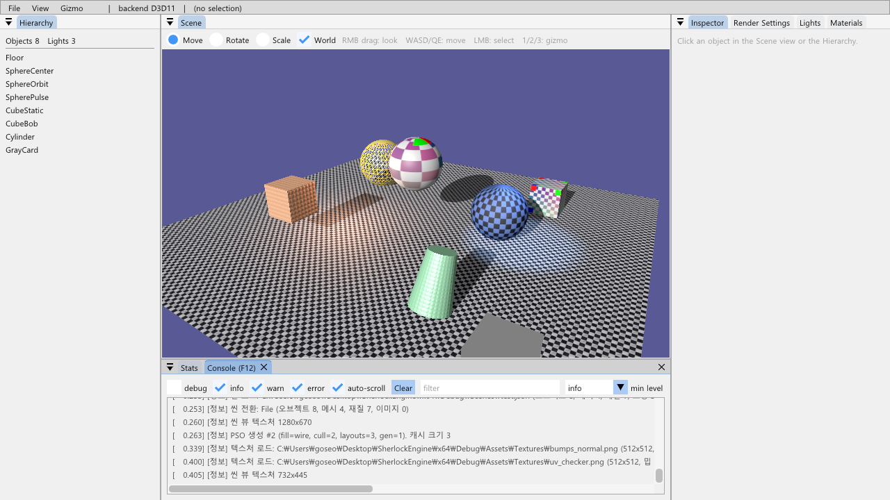
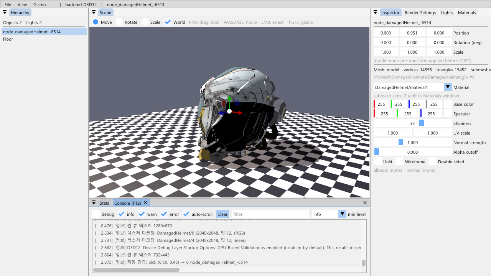
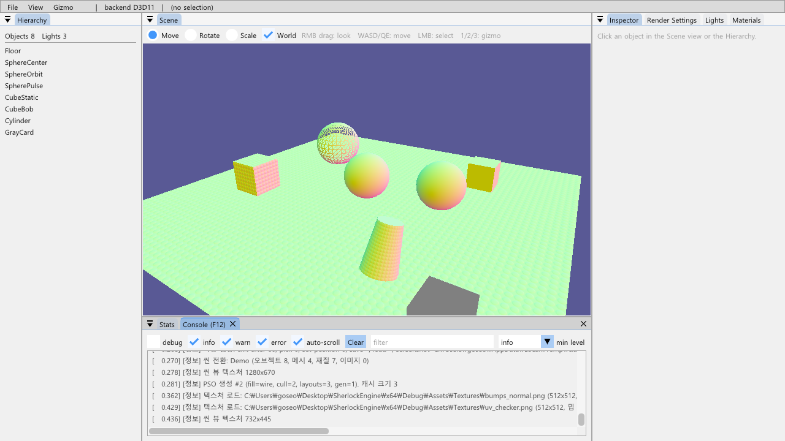
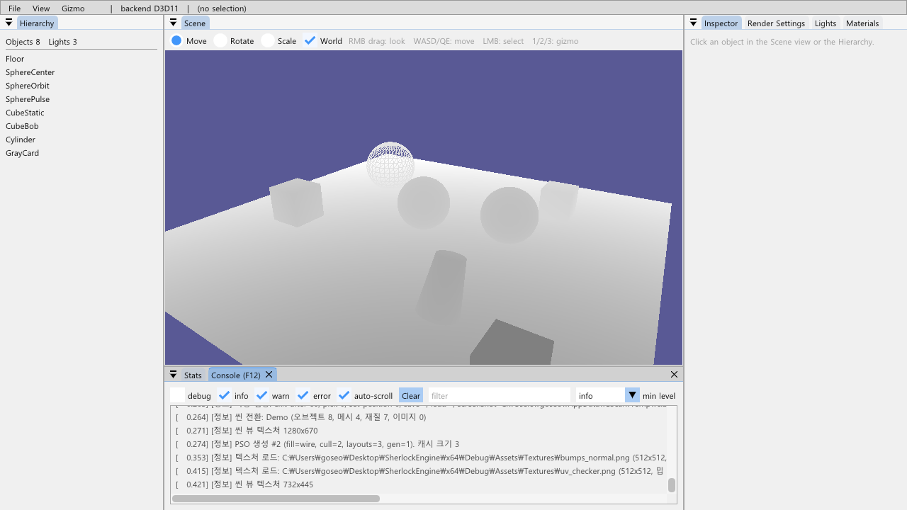
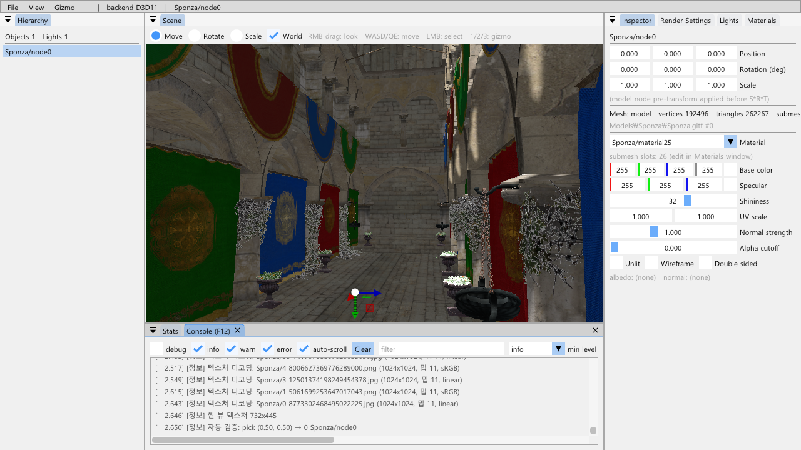

11단계 · 에디터 도구
렌더러와 RHI가 굳은 뒤라 UI 코드가 구조를 왜곡하지 않습니다. 씬은 오프스크린 텍스처에 그려져 ImGui 도킹 창 안에 뜨고, 클릭으로 오브젝트를 고르고, ImGuizmo 로 옮기고, Inspector 에서 Transform·재질을 편집하고, JSON 으로 저장해 다시 불러옵니다. 로드맵이 예고한 대로 "씬을 텍스처에 그려 ImGui 창에 표시"는 Renderer 의 타깃 선택 한 곳으로 끝났습니다 — 6단계의 RenderPassDesc 가 attachment 를 값으로 받기 때문입니다. 덤으로 RHI 에 백버퍼 리드백을 더해 OS 입력 주입 없이 에디터 경로(선택 → 편집 → 저장 → 로드)를 자동 검증합니다.
에디터는 App/Editor 한 클래스이고 아무것도 소유하지 않습니다 — 씬·카메라·렌더러는 Engine 의 것이고 씬 전환·저장·로드는 콜백으로 앱에 넘깁니다(3단계 DebugUI 의 "패널은 편집만" 규칙 그대로). 씬 뷰는 Renderer 가 백버퍼 대신 그리는 텍스처 하나이고, 선택은 씬 뷰 픽셀에서 쏜 광선과 각 메시의 로컬 AABB 검사, 기즈모는 ImGuizmo 가 준 월드 행렬에서 노드 pre-transform 을 벗겨 S·R·T 로 분해한 것입니다. 저장은 정점 데이터가 아니라 메시의 출처(프리미티브 인자 또는 모델 경로 + 인덱스)를 적습니다.
1.요약
| 로드맵 항목 | 구현 | 확인 |
|---|---|---|
| Scene Hierarchy, Inspector(Transform·Material 편집), Light 패널 | Hierarchy 창(선택), Inspector 창(위치·회전(도)·크기, 메시 출처, 재질 콤보 + 재질 필드), Lights·Materials 창(6단계 패널 재사용) | 그림 1: SphereCenter 선택, Inspector 의 위치 (0, 6, 0) |
| Render Settings: 백엔드 표시, PSO 캐시 통계, 디버그 뷰(노멀/깊이/그림자맵) | Render Settings 창: 4·5·6·10단계 패널 + 디버그 뷰 콤보(Lit/Albedo/World normal/Depth/Shadow factor/UV) + 그림자 맵 미리보기 | 그림 4·5: 노멀·깊이 뷰 |
| Stats: 드로우콜, PSO 전환 수, GPU 시간 | Stats 창: FPS, 드로우·삼각형·PSO/셋/메시 전환·PSO 캐시, 모델 통계, 10단계 프로파일러(CPU/GPU) | PSO 전환 수가 4단계 정렬의 효과를 보여 준다 |
| 씬 뷰를 오프스크린 텍스처로 렌더링 → ImGui Dockspace | Renderer::SetSceneTarget(w, h): TYPELESS UNORM 색 + D24S8 깊이, 메인 패스가 거기에, UI 패스가 백버퍼를 지운다. ImGui::Image + DockBuilder 기본 배치 | 그림 1~3, 두 백엔드 |
| 씬 저장/로드(JSON), ImGuizmo | SceneSerializer(nlohmann-json, 메시 출처·재질·조명·오브젝트·카메라), ImGuizmo 이동/회전/크기 + 월드/로컬, 1/2/3 키, Ctrl+S/Ctrl+L | 저장 → 재시작 로드에서 편집값 복원 (그림 2) |
| 완료 기준 | 클릭 선택(광선-AABB) → Inspector/기즈모 편집 → 저장 → 로드 | 자동 검증 A/B (8절) |
2.도킹 공간과 기본 배치
vcpkg 의 imgui 에 docking-experimental 기능을 켜면 같은 1.92 의 docking 브랜치가 옵니다2. io.ConfigFlags |= ImGuiConfigFlags_DockingEnable 뒤 DockSpaceOverViewport 가 메인 뷰포트(메뉴 바 아래)를 도킹 공간으로 만듭니다. 첫 실행(imgui.ini 없음)의 배치는 imgui_internal.h 의 DockBuilder 로 만듭니다 — 왼쪽 18% Hierarchy, 오른쪽 30% Inspector/Render Settings/Lights/Materials(탭), 아래 28% Console/Stats, 가운데 Scene. 저자가 "곧 다시 설계할 API" 라고 적어 둔 실험 API 이므로2 호출은 Editor::BuildDefaultLayout 한 함수에 가둡니다. 그 뒤로는 imgui.ini 가 배치를 기억하고 View → Reset layout 이 되돌립니다.
AppBase::Run 의 "Information" 창은 사라졌습니다. 앱(OnGUI)이 자기 창을 만들고, 10단계 Engine::Render 는 그대로입니다. 화면 전체가 ImGui 라 io.WantCaptureKeyboard 는 늘 참이 되어, 단축키는 WantTextInput 으로만 막고 카메라 이동은 씬 뷰가 포커스/호버일 때만 받습니다.
3.씬 뷰: 오프스크린 텍스처 하나
3.1 TYPELESS 색 텍스처 (두 백엔드)
씬 뷰 텍스처는 두 가지 뷰가 필요합니다: 메인 패스가 그릴 sRGB RTV(5단계의 감마 규칙 유지)와 ImGui 가 샘플할 UNORM SRV(ImGui 는 픽셀 값을 그대로 UNORM 백버퍼에 옮기므로 sRGB 로 인코딩된 바이트를 그대로 읽어야 색이 맞습니다). 타입이 정해진 리소스는 같은 포맷의 뷰만 만들 수 있고, 스왑체인 백버퍼만 예외입니다. 그래서 RenderTarget | ShaderResource 인 UNORM 색 텍스처를 두 백엔드 모두 R8G8B8A8_TYPELESS 로 만들고 뷰에서 포맷을 정합니다6 — 6단계 그림자 맵(D32 TYPELESS)이 낸 길 그대로입니다.
// D3D11Device::CreateTexture (D3D12 도 같은 규칙)
const bool colorRtAndSrv = (bind & RenderTarget) && (bind & ShaderResource) && format == R8G8B8A8_UNORM;
texture.typeless = (depthAndSrv && IsDepth(format)) || colorRtAndSrv;
td.Format = typeless ? (IsDepth(format) ? DepthTypeless(format) : DXGI_FORMAT_R8G8B8A8_TYPELESS) : format;
// GetRTV(srgb=true) → UNORM_SRGB, GetRTV(false) → UNORM (TYPELESS 에는 뷰 포맷 명시), GetSRV → UNORM3.2 Renderer 의 타깃 선택과 배리어
// Renderer::RenderMainPass — attachment 만 바뀐다
if (IsOffscreen()) { target = m_sceneColor; depth = m_sceneDepth; cmd.Barrier(m_sceneColor, state, RenderTarget); }
else { target = backBuffer; depth = deviceDepth; cmd.Barrier(backBuffer, Present, RenderTarget); }
pass.colors[0].texture = target; pass.colors[0].srgbView = m_settings.srgbOutput; pass.depth.texture = depth;
...
cmd.EndRenderPass();
if (IsOffscreen()) cmd.Barrier(m_sceneColor, RenderTarget, ShaderResource); // ImGui 가 샘플한다
// BeginUIPass — 오프스크린이면 백버퍼는 여기서 처음 쓰인다: Present → RenderTarget + Clear(에디터 배경)씬 창의 내용 영역 크기가 바뀌면 SetSceneTarget 이 텍스처를 다시 만듭니다. 이전 텍스처의 파괴는 8단계의 지연 해제를 지나므로(D3D12) 실행 중인 프레임의 ImGui 드로우가 아직 읽어도 안전하고, D3D11 은 참조 카운트가 지켜 줍니다. 카메라의 종횡비는 씬 뷰 크기를 따릅니다. 프레임당 배리어가 4 → 6 (씬 텍스처 왕복) 이 되었고 Stats 에 보입니다.
4.클릭 선택: 광선과 AABB
씬 뷰 이미지 위의 클릭(기즈모 위가 아닐 때)을 정규화 픽셀 (u, v) 로 바꾸고, NDC 의 near·far 점을 (view × proj)⁻¹ 로 역투영해 월드 광선을 만듭니다. 오브젝트마다 광선을 world⁻¹ 로 로컬 공간에 옮겨(회전·스케일·노드 pre-transform 이 있어도 정확) 9단계 메시의 로컬 AABB 와 slab 검사4를 하고, 로컬 t 를 방향 벡터 길이로 월드 거리로 바꿔 가장 가까운 것을 고릅니다. AABB 라서 헬멧처럼 빈 공간이 많은 메시는 상자 근처 클릭도 잡힙니다 — 삼각형 정밀 선택은 필요해지면 같은 자리에 넣습니다.
5.ImGuizmo: 행렬 배치와 분해
ImGuizmo1 는 열우선 메모리의 4×4 float 를 받습니다. DirectXMath 의 행벡터 행렬은 메모리 배치가 그것과 같습니다(이동이 [12..14] 에 있는 것이 증거) — 그래서 XMFLOAT4X4 를 그대로 넘깁니다. 프레임마다 ImGuizmo::BeginFrame(AppBase::Run, ImGui::NewFrame 직후), 씬 창 안에서 SetDrawlist + SetRect(이미지 위치·크기) 뒤 Manipulate(view, proj, op, mode, world).
// Manipulate 가 world 를 바꿨으면: world = pre × S·R·T ⇒ S·R·T = pre⁻¹ × world
XMMATRIX local = XMLoadFloat4x4(&world);
if (t.HasPreTransform()) local = XMMatrixInverse(nullptr, t.GetPreTransform()) * local;
XMMatrixDecompose(&scale, &rotation, &translation, local); // [5]
t.SetScale(scale); t.SetRotation(EulerFromRotation(rotationMatrix)); t.SetPosition(translation);Transform 이 오일러 각(XMMatrixRotationRollPitchYaw(pitch, yaw, roll) = Rz·Rx·Ry, 행벡터)을 쓰므로 회전 행렬에서 각을 되찾아야 합니다: m[2][1] = −sin p, m[2][0] = cos p·sin y, m[2][2] = cos p·cos y, m[0][1] = sin r·cos p, m[1][1] = cos r·cos p. pitch = asin(−m[2][1]), yaw = atan2(m[2][0], m[2][2]), roll = atan2(m[0][1], m[1][1]); cos p ≈ 0 이면 yaw 를 0 으로 두고 roll 에 몰아줍니다. 모델 노드(Sponza 전체가 오브젝트 하나)도 pre-transform 을 벗기므로 기즈모가 정상 동작합니다(그림 3).
6.Hierarchy · Inspector · Stats · 디버그 뷰
Hierarchy 는 오브젝트 이름 목록(Selectable)이고 빈 곳 클릭이 선택을 지웁니다. Inspector 는 선택 오브젝트의 이름, 위치/회전(도)/크기 DragFloat3, 메시 출처(sphere/plane/model + 경로·인덱스), 재질 콤보(씬의 재질 중 고름)와 그 재질의 필드(기본색·스페큘러·광택·UV 배율·노멀 세기·알파 컷아웃·unlit·와이어·양면)입니다. 재질 편집은 4단계 캐시가 다음 프레임에 상수를 다시 올리고, 텍스처가 바뀌면 ResourceSet 을 다시 만듭니다. Stats 는 10단계 프로파일러와 Renderer 통계를 한 창에 모았습니다.
디버그 뷰는 PerFrame 상수버퍼에 debugParams(288 → 304 B) 를 더하고 픽셀 셰이더가 조명 직전에 분기합니다: 알베도, 월드 노멀(×0.5+0.5, 노멀 맵 적용 뒤), 깊이(카메라 거리 / 범위), 그림자 계수, UV. 셰이더 상수 하나라 PSO 변형이 늘지 않습니다. 그림자 맵 미리보기는 6단계 것 그대로입니다.
7.씬 저장/로드 (JSON)
{ "version": 1, "camera": {position, yaw, pitch}, "ambientColor", "clearColor",
"meshes": [ {"type":"sphere","params":[2.5,0,0,0],"a":32,"b":16,"color":[..]}, {"type":"model","path":"Models\\DamagedHelmet\\DamagedHelmet.glb","meshIndex":0} ],
"materials": [ {name, baseColor, specularColor, shininess, albedoTexture, albedoSrgb, sampler, uvScale, unlit, normalTexture, normalStrength, alphaCutoff, wireframe, doubleSided} ],
"lights": [ {type, position, direction, color, intensity, range, attenuation, innerConeCos, outerConeCos} ],
"objects": [ {name, mesh, material, slotMaterials?, position, rotation, scale, preTransform?} ] }메시는 정점이 아니라 출처로 저장합니다. Scene::AddMesh(mesh, MeshSource) 가 출처를 같이 받고(프리미티브 인자, 또는 모델 경로 + 메시 번호 — AssetManager 가 Model::sourcePath 를 채웁니다), 로드는 프리미티브를 다시 만들거나 AssetManager 에서 모델을 받아 그 메시를 복사하고 이미지 바이트(AddModelImages)를 씬에 넣습니다. 재질은 JSON 값이 우선이라 편집이 살아남고, 이미지 이름은 9단계 규칙("<모델>/<번호> Renderer::InvalidateScene → Scene::Clear → 채우기(포인터 키 캐시). 파일은 nlohmann-json3 의 dump(2) / parse, 값 접근은 value(key, default) 라 필드가 빠져도 기본값으로 읽힙니다.
8.자동 검증: 입력 주입 없이
이전 단계의 검증 스크립트는 화면을 캡처하고 키·마우스를 OS 에 주입했습니다. 이 단계 도중 사용자가 전체 화면 게임을 하고 있어 그 캡처가 게임 화면을 찍었고, 주입한 F10·F11·클릭이 게임으로 갔을 가능성이 있습니다(11절). 그래서 검증 방식을 바꿨습니다: (1) RHI 에 RequestBackBufferReadback / TakeReadbackResult 를 더해 Present 직전의 백버퍼를 CPU 로 읽고(D3D11: STAGING + Map(READ)7, D3D12: 커맨드 리스트에 COPY_SOURCE 전이 + 리드백 힙 복사, 펜스 뒤 Map8) DirectXTex 로 PNG 를 씁니다(Graphics/Screenshot). 창이 가려져 있거나 화면 밖이어도 정확한 프레임입니다. (2) TestApp 의 실행 인자가 에디터 경로를 프레임 번호로 재생합니다 — --pick=u,v 는 클릭과 같은 Editor::Pick, --set-position 은 Inspector 편집과 같은 Transform::SetPosition, --save/--load 는 메뉴와 같은 콜백. (3) --exit-after 가 있으면 창을 화면 밖(x = −3000)에 활성화 없이 만들고 포커스를 가져오지 않습니다.
# A: 데모 씬, 씬 뷰 중앙 클릭 → 선택 → y = 6 으로 → 저장 → 스크린샷
SherlockEngine.exe --scene=demo --exit-after=60 --pick=0.5,0.5 --set-position=0,6,0 --save=Scenes\test.json --screenshot=a.png
# B: 재시작해서 그 파일을 로드 → 스크린샷 (구가 y = 6 에 있다)
SherlockEngine.exe --scene=Scenes\test.json --exit-after=60 --screenshot=b.png
# 그 밖에 --load=path, --debug-view=N, --dump-objects=1, --backend=d3d129.함정과 해결
- TYPELESS 뷰. 3.1절. 타입이 정해진 UNORM 텍스처에 sRGB RTV 를 만들면 실패한다(백버퍼만 예외). RT+SRV 색 텍스처는 TYPELESS, 뷰마다 포맷 명시.
- 백버퍼가 안 지워짐. 오프스크린이면 메인 패스가 백버퍼를 건드리지 않으므로 UI 패스가 Present → RenderTarget 전이와 Clear 를 맡는다.
- ImGuizmo 회전을 오일러로. 5절. 분해 순서(Rz·Rx·Ry)가 틀리면 기즈모를 놓는 순간 물체가 튄다. 노드 pre-transform 은 먼저 벗긴다.
- WantCaptureKeyboard 가 늘 참. 2절. 도킹으로 화면 전체가 ImGui 창이라 F 키·WASD 가 막혔다. 텍스트 입력 중(
WantTextInput)에만 막고, 이동은 씬 뷰 포커스/호버 조건. - 검증 도구가 사용자 화면을 침범. 8절. 화면 캡처와 입력 주입을 버리고 리드백 스크린샷 + 실행 인자 재생으로. 자동 모드는 창을 화면 밖에, 포커스 없이.
- 백슬래시 리터럴. 도구 경유 편집에서
L'\\'가 두 번L'\'로 깨졌다(MSYS 인자 변환). 빌드 오류로 바로 잡혔지만 기록해 둔다. --dump-objects. 인자 파서가--이름=값형식만 알아 값 없는 플래그는 무시된다.--dump-objects=1로 쓴다.
10.검증과 스크린샷
- 완료 기준 "오브젝트를 클릭해 편집하고 저장한 씬을 다시 불러올 수 있다" — 자동 검증 A: 씬 뷰 (0.5, 0.5) 픽셀 광선 →
SphereCenter선택 (로그 "pick (0.50, 0.50) → 1 SphereCenter"), 위치 (0, 6, 0) 으로 편집,Scenes\test.json저장(오브젝트 8, 메시 4, 재질 7, 조명 3, 9 KB). B: 새 프로세스가 그 파일을 로드 — 오브젝트 8·메시 4·재질 7 복원, 구가 y = 6 에 떠 있다 (그림 2). Release 빌드도 같은 파일을 로드. - D3D12: 헬멧 씬에서 (0.5, 0.45) 클릭 → 헬멧 노드 선택, 기즈모 표시 (그림 3). 데모 씬 (0.5, 0.5) → SphereCenter. Debug Layer·GBV 메시지 0.
- Release Sponza: 오브젝트 하나(노드) 선택, Inspector 에 pre-transform 표시, 26 슬롯 재질, 기즈모 (그림 6). 로드 208 ms.
- 디버그 뷰: 월드 노멀(노멀 맵 적용 뒤 — 바닥의 요철이 보인다), 깊이 (그림 4·5). 알베도·그림자 계수·UV 도 같은 콤보.
- 씬 뷰 텍스처: 창 크기에 따라 1280×670 → 732×445 재생성 로그. 두 백엔드 모두 TYPELESS 색 + sRGB RTV + UNORM SRV.
- 격리 grep 0. Debug·Release 빌드 경고 0. 7절 문제점 20개 전부 해결됨 표시(이 단계에서 #10 FeatureLevel 11_0 전용, #20
io.DisplaySize삭제), 8절 설계 지점 D2·D3·D4·D6·D8·D9·D12·D15·D21·D22 적용 표시.


Scenes\test.json 을 로드한 화면. 구가 y = 6 에 떠 있고 카메라·조명·재질이 복원됐다. 완료 기준의 "다시 불러올 수 있다".



11.참고 문헌
- Cédric Guillemet, ImGuizmo (MIT) — Manipulate(view, proj, op, mode, matrix), SetRect/SetDrawlist/BeginFrame, 열우선 float[16]. github.com/CedricGuillemet/ImGuizmo
- Dear ImGui Wiki, Docking — ImGuiConfigFlags_DockingEnable, DockSpaceOverViewport, 실험 API DockBuilder. github.com/ocornut/imgui/wiki/Docking
- Niels Lohmann, JSON for Modern C++ (MIT) — parse, dump(indent), value(key, default). github.com/nlohmann/json
- Scratchapixel, Ray-Box Intersection — slab 방법. scratchapixel.com/…/ray-box-intersection.html
- Microsoft Learn, XMMatrixDecompose — 스케일·회전 쿼터니언·이동 분해. learn.microsoft.com/…/nf-directxmath-xmmatrixdecompose
- Microsoft Learn, DXGI_FORMAT — TYPELESS 포맷과 뷰 캐스팅 규칙. learn.microsoft.com/…/ne-dxgiformat-dxgi_format
- Microsoft Learn, ID3D11DeviceContext::Map — STAGING 리소스의 READ 매핑은 GPU 를 기다린다. learn.microsoft.com/…/nf-d3d11-id3d11devicecontext-map
- Microsoft Learn, Read back data via a buffer (D3D12) — 리드백 힙, 펜스 대기 뒤 Map, 빈 범위로 Unmap. learn.microsoft.com/…/readback-data-using-heaps